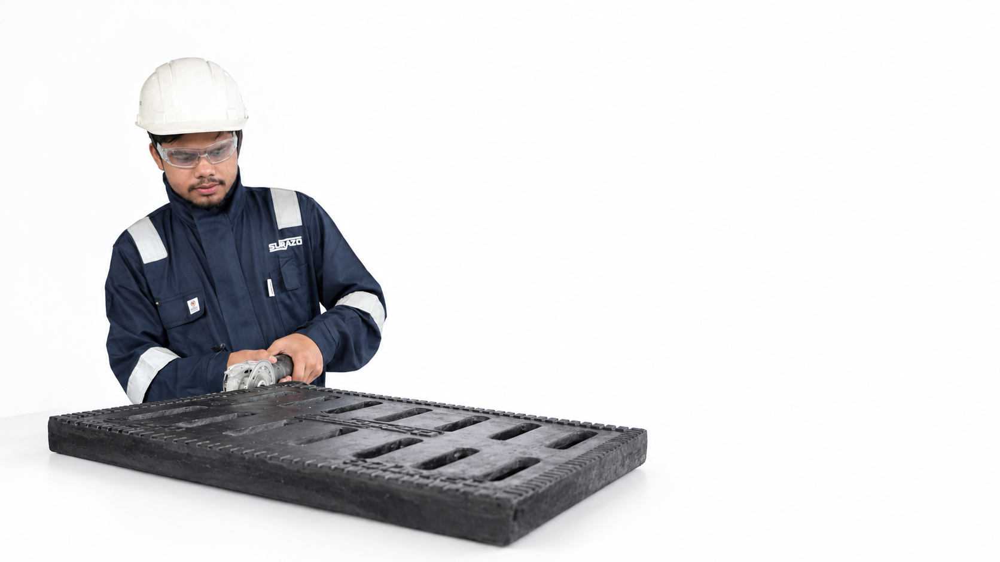
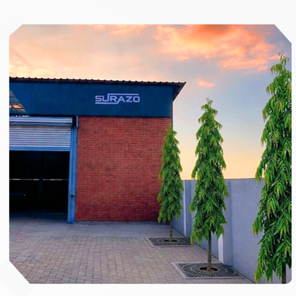

25 years on the ground.
A better way forward.
When you’ve spent years manufacturing and installing covers, you learn where they fail. They get stolen. They corrode. They become too heavy to handle.
Surazo brings that field experience into a composite solution designed around the challenges of real infrastructure. A brand of Ulhas Buildtech Pvt. Ltd., manufactured in Nagpur and built for the work ahead.
The product brief grew from recurring problems seen in the field: theft, rust, cracking and difficult handling. Surazo brings manufacturing and installation experience together in a composite alternative for everyday infrastructure.
Meet your infrastructure partnerof field experience
covers installed
Manufactured in Nagpur, Maharashtra
Where Surazo takes shape.
Our facility in Nagpur is home to the manufacturing experience behind Surazo manhole covers.
Planning a visit? Get in touch with our team and use the map for directions.
Talk to our team